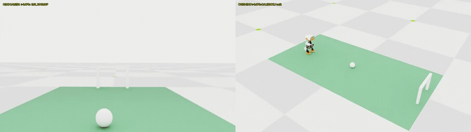

SELF-PACED WORKSHOP
从关节动作到完整技能
把“踢到了球”拆成准备、触球、收脚和恢复，理解技能为何需要入口与出口条件。
给技能定义边界
一个行走策略可以持续接收速度指令；踢球则是一个有开始和结束的短技能。要接入自主任务，除了动作本身，还需要说明何时允许开始、结束后应处于什么状态，以及失败时如何停止。
| 阶段 | 需要检查什么 |
|---|---|
| 准备 | 球是否在可踢区域，身体朝向是否合适，观测是否仍新鲜 |
| 触球 | 由真实足部接触推动球，而不是直接修改球状态 |
| 收脚 | 及时结束出脚并回到支撑状态 |
| 恢复 | 机器人保持稳定，没有摔倒或关节越界 |
理解固定教师与残差
课程踢球组合包括一个固定的基础动作策略和一个已训练的残差模型。残差在基础动作上做调整，因此其输入、动作尺度、执行器和时序都必须匹配。单独拿走其中一个文件，不能认为剩下的文件仍是同一个技能。
python3 scripts/workshop.py inspect-model --model models/kick-teacher.onnx
python3 scripts/workshop.py inspect-model --model models/kick-residual.onnx在模型清单中找出这两份文件。比较输入与输出形状，写下“哪些输入来自机器人状态，哪些来自任务目标”。它们会在第七章被完整任务调用；本章不要求重新训练。
为什么两个 ONNX 不能随意互换
ONNX 是模型表示格式，不是统一的机器人技能协议。行走模型读 61 维输入，当前踢球残差读 62 维输入；即使它们都输出 14 个数，也不能直接互换。输入的顺序、附加状态、动作缩放、教师混合方式和结束条件都属于运行契约。
运行本章的模型检查命令后，把输入、输出形状分别记下来。然后解释：为什么“能成功载入文件”只能说明模型格式可以读取，而不能说明机器人会完成动作？一个文件可能完全合法，却被喂入错误单位或错误关节顺序。固定任务入口将权重和这些约定一起使用。
观看出脚过程时，分三段观察：出脚前，球和支撑脚是否处于合适位置；出脚中，实际接触来自脚还是身体其他部位；出脚后，机器人是否恢复支撑。练习在每个阶段暂停一次 GIF，用自己的话描述进入条件和完成条件。这比只观察“球有没有动”更接近机器人系统的真实要求。
观察出脚与恢复

检查理解
球进门了，但机器人随后摔倒。这次技能是否完整成功？
查看解析
按本课程标准不算。完成技能包括真实触球、进球和踢后恢复。只检查球的位置，会遗漏机器人稳定性和动作安全边界。
扩展观察：篮球平衡

试着为平衡技能写出成功定义：持续多久、允许多大身体倾角、球是否可移动。你会发现“训练完成”只是程序状态，技能是否学会需要另行评估。
用输入、输出与结束条件描述技能
把一个技能写成“进入条件、使用哪些观测、输出什么动作、何时退出”四部分。以射门为例：球要在适合右脚出脚的位置，身体朝向球门，支撑稳定，且目标观测没有过期。技能执行期间会使用踢球教师与残差修正；结束后必须回到稳定的站立或行走状态，不能把“已经碰到球”直接当作任务结束。
残差可以理解为在既有动作上添加一个受约束的修正。它缩小了需要从头学习的问题，但也继承了教师的适用范围。把局部射门技能放到远离球的位置，并不会让它自动学会找球或走近。导航负责创造技能能接手的条件，技能负责完成自己的局部动作。
检查理解
机器人已走到球旁，但球的位置记忆过期。应立刻运行踢球技能吗？
查看解析
不应。先重新观察并确认进入条件。仅仅靠近目标不足以保证技能输入有效。